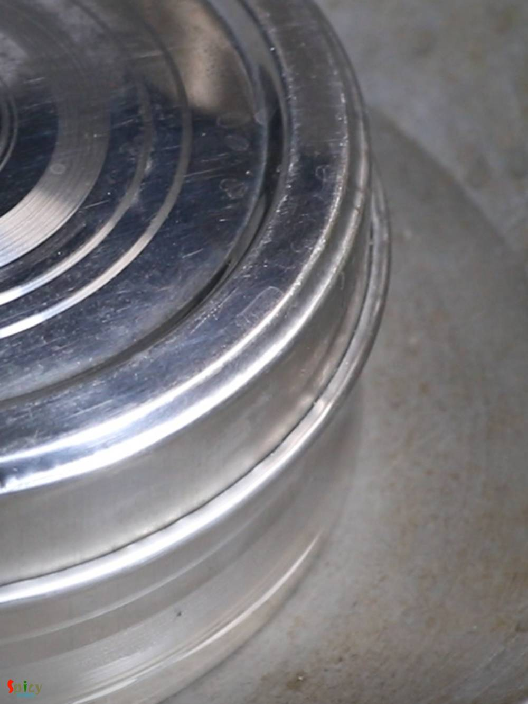

Simple and Easy Recipes
Paneer Bhapa / Steamed Paneer in Mustard Poppy seeds gravy
© 2016 Spicy World, Published on: Mar 19, 2019
Paneer Bhapa is a very easy and flavorful Bengali veg dish which goes best with steamed rice. Bhapa means steamed. Any spicy bhapa dish like Chingri bhapa, Ilish bhapa etc will call for two important ingredients - Green chili and Mustard oil, without these two 'bhapa' will taste bland. In this Paneer Bhapa recipe, paneer will be steamed in mustard, poppy seeds, coconut and yogurt gravy within a steel box. The taste and texture of Paneer is out of the world. Try this very easy recipe in your kitchen and let me know how it turned out for you.

Ingredients
- 12-15 pieces of paneer cubes.
- 2 Tablespoons of black mustard seeds.
- 2 Tablespoons of yellow mustard seeds.
- 2 Tablespoons of poppy seeds.
- 2-3 Tablespoons of grated coconut.
- 2 Tablespoons of yogurt.
- Salt and sugar as per your taste.
- 4-5 green chilies.
- 3 Tablespoons of mustard oil.
- 1 Teaspoon of turmeric powder.
- Water as required.


Steps
In a bowl add two types of mustard seeds and poppy seeds.
Then add 5-6 Tablespoons of water to that and let the seeds soak some water for 1 hour.
After that in a grinder add these water soaked seeds along with that water, grated coconut, 1 green chili and a Teaspoon of salt.
Grind them to a smooth paste. Salt and chili will help to reduce the sharpness of mustard seeds.
Take the paste out in a steel box which has a tight lid, add yogurt, turmeric powder, some sugar and more salt.
Mix well, taste it and adjust the seasoning.
After that add paneer cubes and carefully mix them with that mixture.
Lastly add 2-3 slitted green chilies and mustard oil. Give another gentle mix. Adjust the heat level according to your taste. Close the box with tight lid.

Boil a cup of water in a big kadai or flat vessel.
Place the steel box in water, make sure the boiling water should cover half of the box.
Cover the big vessel and cook on medium flame for 15 minutes.
Take the box out carefully from water and let it cool down a little bit, then open!
Your paneer bhapa is ready to serve.
Serve this with steamed rice.
")